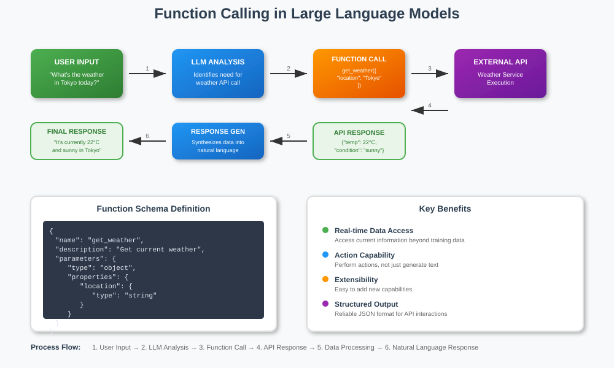

Function / Tool Calling Examples
Some examples showing how to do function/tool calling in Nebius Token Factory
References and Acknowledgements
Prerequisites
- Nebius API key (get it from Nebius Token Factory)
Function Calling Explained

Setup
1. Using Google Colab
No setup needed. Run the notebook and it will install all dependencies
2. (Local) Using uv (recommended)
uv venv
source .venv/bin/activate
uv pip install -r requirements.txt
python -m ipykernel install --user --name="cookbook-1" --display-name "cookbook-1"
3. (Local) Using python / pip
python -m venv .venv
source .venv/bin/activate
pip install -r requirements.txt
python -m ipykernel install --user --name="cookbook-1" --display-name "cookbook-1"
Running the code
Using Jupyter
jupyter lab
And select the kernel defined above and run notebooks.
Using vscode and other IDEs
Restart vscode so it will refresh available kernels. Then select it and run it.
Examples
| Example | Description | Tech Stack |
|---|---|---|
| simple function calling example | Demonstrates how to call functions | Nebius AI |
| Tavily tool calling example | Demonstrates how to implement research agent with Tavily search | Nebius AI, Tavily search |
Notebooks in this recipe: